Ez egy stratégiai, illetve csapat játék, ahol a játékosoknak a választott karakterekkel kell összedolgozniuk, hogy közösen megnyerhessék a játékot a zord jégmezőkőn, amelyet különböző külső tényezők nehezíthetnek.
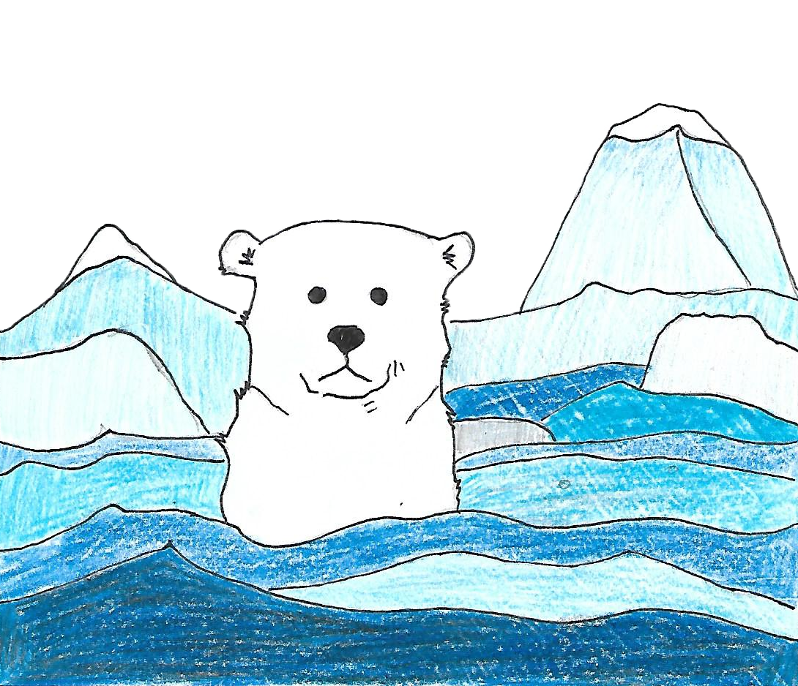
Súgó
Menürendszer:
-Beállítások: Mentése után az Új gombra kell nyomni
-Mentés: Aktuális játákállás mentése
-Betöltés: Előzőleg elmentett játék betöltése
-Új: Új játék létrehozása:
-Generált: Beállítások alapján generált pálya
-Egyedi: Saját egyedi pálya létrehozása
(Egy txt fájl nevét fogja kérni, amiben parancsok vannak)
Irányítás:
-Q: tárgyváltás
-W + kattintás: lépni lehet a sárgával kijelölt mezőkre
-F: tárgyfelvétel
-E + kattintás: tárgyhasználat a kiválasztott táblán
-R + kattintás: képesség használat a kiválasztott táblán
-Space: eltűntet minden kijelölést
Táblák színei:
-fekete: az aktuális tábla, ahol állunk
-zöld: szomszédos táblák
-sárga: választható tábla
-piros: kijelölt tábla
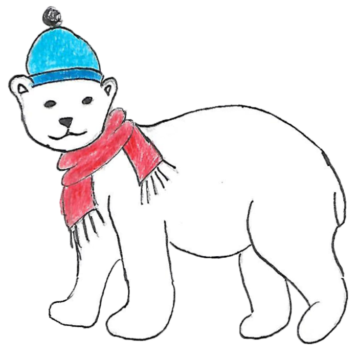
Játék leírás
A játékban a különböző képességű szereplőknek (3 vagy több játékos lehet) kell egy tengerrel körülvett jégmezőn túlélniük. A szereplők lehetnek eszkimók vagy sarkkutatók, és körökre osztva tevékenykednek.
A jégmező jégtáblákból áll. Vannak stabil jégtáblák, amelyeken akárhány szereplő állhat, és vannak instabil jégtáblák, amik adott létszám felett átfordulnak és ilyenkor a rajtuk állók a vízbe esnek és meghalnak. A jégtáblákat a játékkezdetén eltérő mennyiségű hó borítja.
Az egyes jégtáblákba különféle tárgyak lehetnek belefagyva: lapát, kötél, búvárruha, élelem stb. Befagyott tárgyat csak akkor lehet meglátni és kiásni, ha a jégtábla tiszta, azaz nem borítja hó. A jégtáblák között lehetnek hóval fedett lyukak is, amibe beleesve a karakter nem tud csináni semmit, munkája nullára csökken. Ezen kívül egy kör után meghal, csak a búvárruhát viselők élik túl, vagy azok, akiket egy köteles barátjuk a szomszéd jégtábláról hamar kimenekít.
Minden szereplő egy körben 4 egységnyi munkát végezhet. Ilyen munka például a jégtáblán levő egységnyi mennyiségű hó eltakarítása, egy szomszédos jégtáblára való lépés vagy egy kiásott tárgy felvétele. A lapáttal két egységnyi hó takarítható el egy munkaráfordítással.
A jégmezőn időnként feltámad a hóvihar, és néhány érintett jégtáblát újabb adag friss hóval borít be. Akit elkap, annak a testhője egységnyivel csökken. Az eszkimóknak a játék elején 5 egység testhője van, a sarkkutatónak csak 4. Egy élelem eggyel növeli a testhőt, ha még nem maximális.
Ezenkívül van még a jegesmedve, ami minden körben lép egyet, és, akit elkap (azonos jégtáblán áll), azt elkapja és megöli. A medve ellen az iglu véd, de a sátor nem.
A szereplők jégtábláról-jégtáblára haladnak képességeiknek megfelelően. A sarkkutató meg tudja nézni, hogy az a jégtábla, amire lépne, hány embert bír el (a lyuk egyet sem). Az eszkimó tud iglut építeni, amiben átvészelhetők a hóviharok. Egy-egy képesség alkalmazása is egy-egy munkát jelent.
A játék célja egy jelzőrakéta alkatrészeinek (pisztoly, jelzőfény, patron) megtalálása. Az alkatrészek is a jégbe vannak fagyva. Ha ezeket a csapat összegyűjti és ugyanarra a jégtáblára viszi, akkor egy munka felhasználásával összeszerelhetik és elsüthetik, amivel megnyerik a játékot. Ehhez azonban mindannyiuknak ugyanott kell állniuk. Ha valaki menet közben meghal (vízbe esve megfullad vagy elfogy a (HP-ja)testhője és kihűl), akkor a játék véget ér.
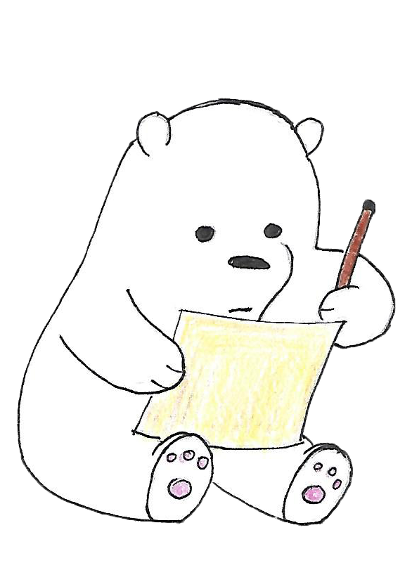
Játékszabályok
-Egy játékot minimum 3 játékosnak kell játszania, ezenbelül mindegy, hogy hány sarkkutató vagy eszkimó van
-Minden karakter kezdetben rendelkezik bizonyos számú Hp-val:
-eszkimó: 5 Hp 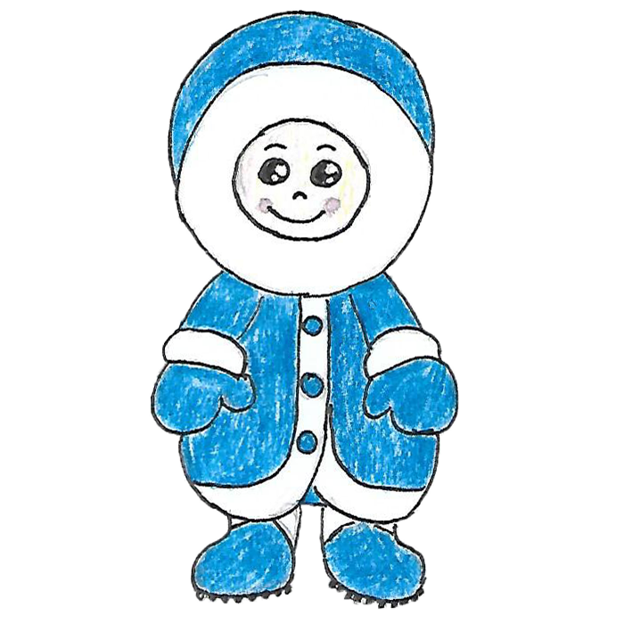
-A karaktereknek vannak képességeik, melyet felhasználva segíthetik a játék menetét (R billentyű lenyomásával lehet használni):
-Minden karakter minden körben 4 egységnyi munkát végezhet, ami lehet:
-hó eltakarítás
-tárgy felvétele
-tárgy használata
-képesség használata
-A játék célja, hogy a táblákon elhelyezett 3 pisztolyt kiássák, egy táblára vigyék és egy munka felhasználásával elsüssék. Ekkor a játék véget ért, a játékosok nyertek.
-A játékot különböző tényezők nehezíthetik:
-egy tábla lehet stabil, ekkor akárhányan állhatnak rajta, de lehet instabil is, ekkor ha túl sokan állnak rajta, akkor felfordul, és a játékosok vízbe esnek és meghalnak. Ilyenkor vége a játéknak
-időközönként jöhetnek hófúvások, amik egyrészt a tárgyakat elfedi plusz hóréteggel, másrészt, aki nincs fedett helyen (sátor, iglu), az veszít a Hp-jéből egyet
-minden körben lép egyet a jegesmedve, és ha egy karakterrel azonos táblán áll, akkor őt felfalja, vége a játéknak. Ha a karakter igluba van, akkor megmenekül a jegesmedve elől
-A játék megnyerését viszont számos tárgy segíti:
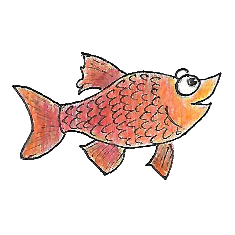
-búvárruha: ha a karakter vízbe kerül, mert hóval fedett víztáblára lép, ennek segítségével túlélheti egy kör után is. Ezt a tárgyat nem kell külön felhasználni, automatikusan a karakterre kerül, ha felveszi
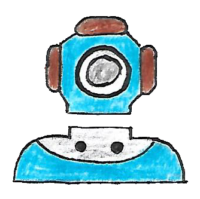
-kötél: egy vízbe jutott játékostársat lehet vele kimenteni, szomszédos tábláról
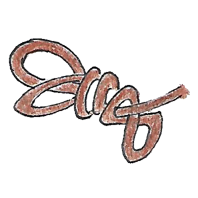
-kéz: ez mindig rendelkezésre áll, ezzel egy egységnyi havat lehet eltakarítani
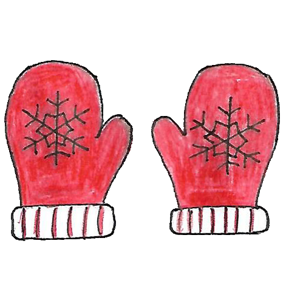
-lapát: ennek segítségével 2 egységnyi havat lehet ellapátolni
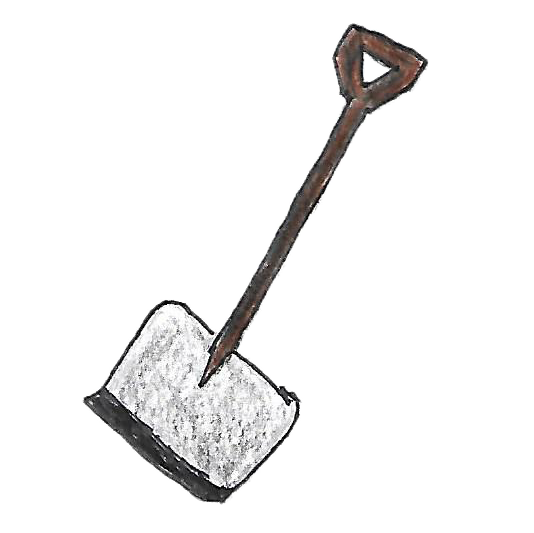
-törékeny lapát: hasonló a sima lapáthoz, de ezzel csak 3x2 egységnyi havat lehet ellapátolni, tehát 3 használat után eltörik
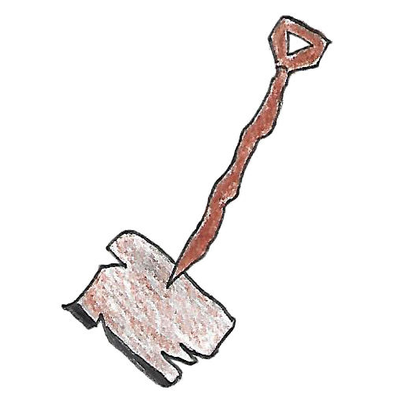
-sátor: az igluhoz hasonlóan megvédi a karaktert a hófúvástól, azonban a medvétől nem, és egy kör után eltűnik
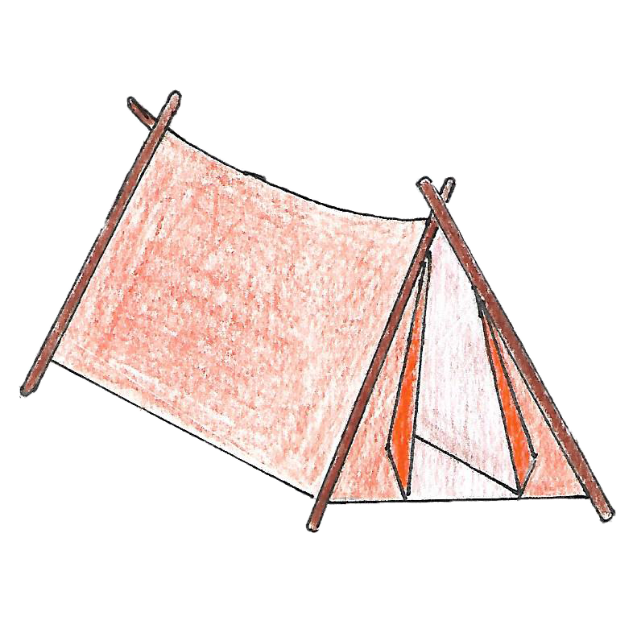
-pisztoly: ebből kell hármat összegyűjteni, egy táblára vinni és elsütni, hogy a játékot megnyerhessék a játékosok
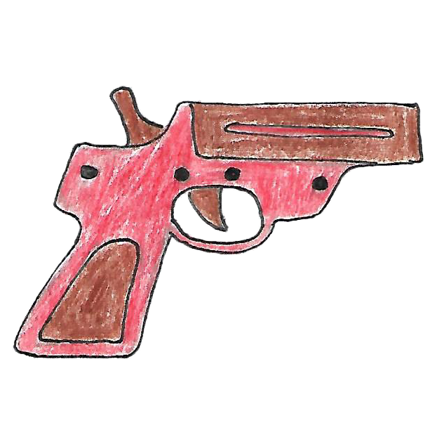
-Egy tárgyat csak akkor lehet meglátni és felvenni, ha az adott táblán. már nincs hóréteg, előzőleg egy játékos eltakarította (vagy alapból nem volt). A tárgyat felvenni az F billenytűvel lehet.
-A tárgyak felvétele és felhasználása 1-1 munkának számít. A tárgy felhasználása az E billenytvűvel lehetséges.
-Amikor egy játékos egy adott táblán áll, az feketével van körülrajzolva, piros szegély az éppen kijelölt tábla és ekkor a zöld szegélyű táblák a szomszédosak. Ahhoz, hogy lépni is tudjon, meg kell nyomni a W billentyűt, majd az immár sárga szegélyű táblákra tud rálépni.
-A tárgyváltáshoz a Q gombot kell megnyomni, annyiszor amíg ki nem választódik a kívánt tárgy, ezt a piros szegély jelzi.